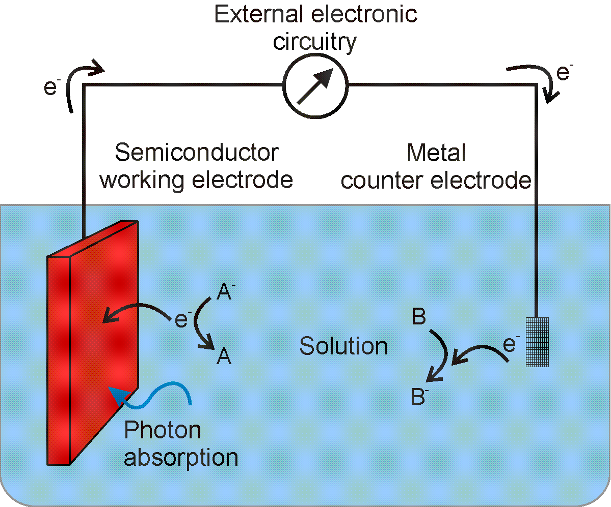
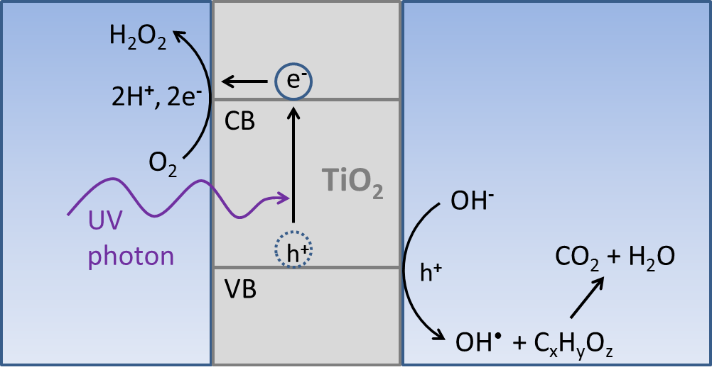
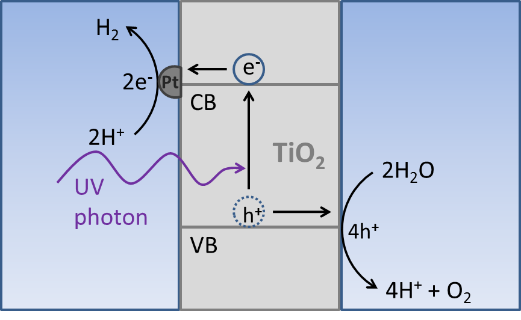

|  |
| Fig. 1. Diagram of a photoelectrochemical cell. |
{kind=link}
Photoelectrochemistry (PEC) is a multidisciplinary field involving surface science, electrochemistry, solid-state physics, and optics. This article focuses on the electrochemical aspects, whereas sevaral sources listed in the Bibliography, provide more detailed information on other aspects of the field.
The basic concept of a photoelectrochemical cell is shown in Figure 1. When light is absorbed by the semiconductor electrode (left), electrons are excited to a higher energy level. These electrons (and their associated absence, the "hole") are capable of carrying out redox reactions at the semiconductor/liquid interface. In this case, holes oxidize "A" anion at the semiconductor/liquid junction to create "A" molecule. At the counter electrode a reduction reaction occurs, here showing the reduction of "B" molecule to "B" anion. This is similar to a standard electrochemical cell, except that light is explicitly involved in providing energy to cause the redox reactions to proceed.
We will first describe the history of photoelectrochemistry. Next, we will touch on the basics of junctions between solid semiconductors and liquids (that is, semiconductors immersed in solution). Two types of photoelectrodes will then be discussed based on the whether they cause oxidation or reduction reactions: photoanodes and photocathodes. We will then discuss the two classes of photoelectrochemical systems by whether they do, or do not, cause a net change in the solution composition: photosynthetic/photocatalytic or regenerative. We will see that both types of photoelectrochemical systems are capable of converting solar energy into useful energy, but only photosynthetic cells are capable of directly forming a stored fuel (for example, hydrogen).
History of photoelectrochemistry
One of the initial discoveries that led to the field of photoelectrochemistry was made by Becquerel, (1839) who observed a photocurrent, that is, a flow of electrons upon illumination with light, between two electrodes immersed in solution. In the 1950s researchers at Bell Labs began to study high purity crystals of germanium and silicon semiconductors, developing models for their electronic behavior. In the 1970s Professor Heinz Gerischer began systematic studies of the behavior of semiconductors immersed in liquid solutions. High efficiency regenerative (electricity producing) photoelectrochemical cells were developed in aqueous and non-aqueous solvents in the 1980's by Lewis et al. A record energy conversion efficiency for a water-splitting photoelectrochemical device was reported by Turner and Khaselev at the National Renewable Energy Lab in 1998. This particular device was unstable over periods of hours, but displayed a conversion efficiency of 12.4% (light energy to chemical energy). Efficient photoelectrochemical cells based on dye sensitization were first reported by Gratzel and ORegan in 1991. These so-called dye sensitized solar cells (DSSCs) convert light energy into electricity and are thus regenerative photoelectrochemical cells. We provide a basic review of semiconductor. More detailed accounts can be found online and through standard texts. (See the Bibliography.)Semiconductors generally have electrical conductivities between those of metals (for example, gold) and insulators (for example, silicon oxide). Semiconductors have an energy level gap where no electronic states exist. This energy gap separates the valence and conduction bands, which do have electronic states. The energetic difference between these two bands is defined as the semiconductor band gap. This band gap, in large part, dictates the optical absorption properties of the semiconductor. For example, a semiconductor with a large band gap (for example, titanium dioxide, or titania) is white in appearance, and only absorbs high energy (ultraviolet) light. Conversely, semiconductors with smaller band gaps (for example, silicon) appear black, or dark in color, and absorb visible light.
Semiconductors can be doped to control the number of mobile charge carriers in each band. Doping involves the addition of small amounts of an impurity (for example, phosphorus in a silicon lattice) resulting in free charge carriers that can move in the crystal. The types of charge carriers are electrons in the conduction band and holes in the valence band. Holes are not real particles and are simply the absence of an electron in the valence band. However, they are usually treated like particles because this simplifies the analysis. Through doping, the number of mobile charges is increased, thus increasing the conductivity of the semiconductor.
Materials that are doped with electrons in the conduction band are termed n-type because their conductivity is described by the movement of negatively charged particles (electrons). Materials doped with holes in the valence band are termed p-type because their conductivity is described by the movement of positively charged particles (holes). The control of the electronic properties through doping is an important feature of semiconductors.
 Semiconductor/liquid junctions
Semiconductor/liquid junctions
When an n-type semiconductor is immersed in a solution that contains a supporting electrolyte (for example, a salt) and a redox couple, charge (electrons) can move to and from the solid semiconductor to the liquid. For specification, we will consider the properties of a liquid junction with an n-type semiconductor. Due to the excess of electrons in the n-type material, electrons will generally flow from the semiconductor to the liquid. Because electrons are removed from the semiconductor, a region near the itssurface is formed that has net positive charge. This fixed positive charge creates an electric field within the semiconductor and is responsible for the photoactivity of the semiconductor photoelectrochemical system.
When light of energy greater than the semiconductor bandgap energy is incident on the semiconductor, an excess electron and an excess hole will be created within the solid. Because of the electric field near the interface with the solution, the electron is driven away from the interface and the hole is driven toward the interface. When the hole reaches the interface, the hole can oxidize a species in solution. The electron is collected at the electrodes metal contact, which is connected to external electronics (for example, a potentiostat) or a load (for example, a light bulb) and ultimately to a counter electrode, where a reduction reaction occurs. The semiconductor working electrode is also connected to the metal counter electrode through the solution completing the circuit. The opposite argument holds for a p-type semiconductor, in which case electrons are driven to the semiconductor surface causing reduction reactions.
Depending on the types of redox reactions occurring in solution one may classify photoelectrochemical systems further. These classifications are discussed below.
Regenerative and photosynthetic photoelectrochemistry
Several usful devices that harness light energy can be constructed by applying the basic principles of semiconductor photoelectrochemistry. Photocatalytic cell titanium dioxide water purification
|  |
| Fig. 2. Diagram of a water purifying titanium dioxide photoelectrochemical cell. |
{kind=link}
Regenerative cell ferrocene/ferrocenium
If the desired output of a photoelectrochemical cell is electricity, then one can use a reversible redox couple to harvest excited electrons or holes. Since the redox couple undergoes electron transfer without any associated chemical reaction, no energy is stored in the form of chemical fuels. It is common to refer to the redox couple as an electron shuttle in this case because it is acting as a carrier for the electron. No net change in the solution composition occurs because the reaction at the semiconductor electrode is the opposite reaction of that occurring at the counter electrode. This is illustrated in Figure 1 if redox couple B is replaced with redox couple A. For example, if an n-type semiconductor is immersed into a solution of ferrocene and ferrocenium (singly-oxidized ferrocene) and is illuminated, excited holes will be driven to the surface. A molecule of ferrocene that comes close to the surface can donate an electron to the electron poor semiconductor, being oxidized to ferrocenium in the process. If the semiconductor is connected to an external circuit that includes a load, then the excited electrons can exit the bulk of the semiconductor to do work on the load (for example, a light bulb). A metallic counter electrode that is also immersed in the solution and used to return the electrons from the external circuit to the ferrocenium in solution, reducing it back to ferrocene and closing the circuit. Thus, no net change in the solution composition occurs.
The advantage of this type of cell over a conventional solar cell is that expensive processing techniques are replaced by the formation of a semiconductor/liquid junction. Simply immersing a clean semiconductor surface into a solution containing a redox couple creates the desired photoactive junction. However, most semiconductor/ aqueous liquid junctions are unstable due to eventual oxidation of the semiconductor surface. Non-aqueous liquids that are purged of oxygen can be stable for long periods of time but are more difficult to implement in a practical energy producing device.
Photosynthetic cell water splitting, carbon dioxide reduction
|  |
| Fig. 3 Diagram of a water splitting titanium dioxide photoelectrochemical cell. A titanium dioxide electrode immersed in deoxygenated water and coated with platinum catalyst particles will split water into its constituent elements upon irradiation with sunlight. Photoexcited electrons are consumed to generate hydrogen and holes are used to produce oxygen. |
{kind=link}
Water
Due ot its abundance and low cost, the most common choice of redox couple source is water. Both hydrogen and oxygen are gases at room temperature, which is advantageous in terms of separating the products from reactants. By using a strontium titanate electrode it is possible to use sunlight to drive water splitting redox reactions and thus store energy from the sun in the form of chemical fuel, as shown in Figure 3.
Carbon dioxide
Another abundant fuel precursor is carbon dioxide. By using the energy from excited (high energy) electrons generated in a semiconductor electrode in conjunction with appropriate catalysis, it is possible to reduce carbon dioxide can be reduced into several different products, depending on the conditions and the catalyst used. Some possible reduction products include methane, methanol, formate (formic acid), and carbon monoxide. Methane and methanol can both be directly used as fuels, while formate and carbon monoxide are important precursors to fuels as well as other industrial chemicals. For example, formic acid can be decomposed into hydrogen and carbon monoxide under heat with proper catalysis. Then with additional catalysis, this mixture of hydrogen and carbon monoxide (industrially referred to as synthesis gas) can be converted to a range of hydrocarbon fuels, ranging from methane to the longer chain hydrocarbons used in diesel fuel.
Use as a large scale energy conversion strategy, advantages and disadvantages
A photocatalytic cell, such as a titanium dioxide water purification system, is useful in its ability to generate reactive oxidizing species, but it has no potential for energy conversion because the net chemical reactions are energetically downhill. To make a significant impact on the release of greenhouse gases into the atmosphere that result from the consumption of fossil fuels, energy capture and storage on the scale of tens of terawatts (1 terawatt = 1012 watts, a million-million watts) is needed. Fortunately, the sun provides more than one hundred thousand TW over the surface of the earth. Unfortunately, sunlight is a transient resource, and a scheme for long term storage on the terawatt scale is needed. Any solar cell that produces electricity (such as a regenerative photoelectrochemical cell) suffers from this fundamental limitation.Currently, no cost effective way to store electrical energy exists on a global, industrial scale. Conventional batteries and capacitors do not have the capacity to store enough energy for nighttime power needs. Additionally, only a fraction of the energy needs of modern society can be supplied by electricity. Heating and transportation needs are much more easily and efficiently met by combustible fuels. However, most photoelectrochemical cells are vulnerable to corrosion due to the exposure of the semiconductor electrode to water. In contrast, standard solar cells are stable for decades, because they are sealed to protect the semiconductor from exposure to water.
A photosynthetic cell is distinct from a photocatalytic or regenerative cell in that it induces a net uphill energy change in one or more of the chemical species in solution. Thus, it is the only type of photoelectrochemical device that can store light energy directly in chemical bonds to produce a fuel. Nature uses photosynthesis to store light energy in the form of energy rich compounds, such as sugars, on a vast scale (all green plants and algae) so it should be possible, at least in principle, to mimic this process as a method of generating chemical fuels such as hydrogen or gasoline on an industrial scale. However, a living plant has a rather modest energy budget compared to that of a modern day human and plants have a small solar energy to biomass conversion efficiency averaging 0.5%, on a yearly basis. The fuel that plants produce in the form of sugars must be fermented into ethanol before it is of practical use as a fuel and yet further energy losses are incurred in this transformation.
Recently, a solar to fuel conversion efficiency of 12% has been demonstrated for a photosynthetic cell, splitting water to make hydrogen. However, this system used the expensive and rare semiconductors gallium arsenide and gallium indium phosphide, as well as platinum metal. Additionally, it was only stable for a matter of hours. In order to meet the energy demands of modern society on a large scale, additional research is needed to discover cheap and abundant semiconductor materials that are both stable in aqueous conditions and capable of absorbing a large portion of the solar light spectrum. Also, cheaper materials are needed to act as catalysts to maximize the efficiency of the conversion of the excited (high energy) electrons released by the semiconductor into fuel.
The gaseous nature of hydrogen presents a challenge for utilization as a transportation fuel. The energy density of compressed hydrogen gas (by volume) is only 1/6th that of gasoline. Methods for the compression or liquefaction of hydrogen are available, but they involve very low temperatures and large energy expenditures. Compressed hydrogen is difficult to store and there currently no infrastructure exists for transporting and distributing hydrogen as a fuel. Thus, hydrogen produced by solar power would most likely be reacted with carbon dioxide to form methanol, which is a liquid fuel and is thus much easier to transport and store. Additional energy is required to concentrate carbon dioxide from the atmosphere and react it with hydrogen but this could be less energy intensive than liquefying hydrogen directly.
Because modern society revolves around the use of hydrocarbon fuels, carbon dioxide reduction is an attractive alternative to water splitting. The direct production of liquid fuels such as methanol could be much more efficient in an integrated photoelectrochemical system than production of H2 as an intermediate step. An initial energy expenditure would be necessary to concentrate carbon dioxide from flue gas or from the atmosphere to achieve reasonable photosynthetic efficiencies. This process, however, would allow the burning of hydrocarbon fuels in a carbon neutral cycle, where the net release of carbon dioxide into the atmosphere is zero.
Summary
Photoelectrochemistry provides the potential to store light energy directly in the form of chemical bonds without involving electricity as an intermediate energy carrier. This approach presents an opportunity for efficiency increases in the conversion process and for a reduction in the overall process cost.Both carbon dioxide reduction and water splitting have the potential to provide clean and renewable energy. The challenge lies in finding cheap, abundant, and efficient light absorbers and catalysts and integrating them into a system that functions over many length scales.
Related article
Electrochemistry of plant life
Bibliography
- Principles of Semiconductor Devices, B. Van Zeghbroeck, 2011.
http://ecee.colorado.edu/~bart/book/book/title.html
- Solar Cell Device Physics (2nd edition), S. J. Fonash, Academic Press/Elsevier, Burlington, MA, 2010.
- Nanostructured and Photoelectrochemical Systems for Solar Photon Conversion, M. D. Archer and A. J. Nozik (editors), Imperial College Press, London, 2008.
- Physics of Semiconductor Devices, S. M. Sze and K. K. Ng, Wiley-Interscience,
Hoboken, NJ, 2007.
- Toward Cost Effective Solar Energy Use, N. S. Lewis, Science Volume 315, pp 798-801, 2007.
- Semiconductors, H. Föll, Kiel, Germany, 2007.
http://www.tf.uni-kiel.de/matwis/amat/semi_en/index.html
- Powering the Planet: Chemical Challenges in Solar Energy Utilization, N. S. Lewis and D. G. Nocera, Proceedings of the National Academy of Sciences of the USA Volume 103, pp 15729-15735, 2006.
- Beyond Oil and Gas: The Methanol Economy, G. A. Olah, A. Goeppert, and G. K. S. Prakash, Wiley-VCH, Weinheim, Germany, 2006.
- Semiconductor Devices: Physics and Technology (2nd edition),
S. M. Sze, Wiley, New York, 2001.
- Electrochemical Methods: Fundamentals and Applications (2nd edition), A. J. Bard and L. R. Faulkner, Wiley, New York, 2001.
- TiO2 Photocatalysis: Fundaments and Applications, A. Fujishima, K. Hashimoto, and T. Watanabe, BKC, Tokyo, Japan, 1999.
- Semiconductor Device Fundamentals, R. F. Pierret, Addison Wesley, Reading, MA, 1996.
- Principles and Applications of Semiconductor Photoelectrochemistry, M. X. Tan, P. E. Laibinis, S. T. Nguyen, J. M. Kesselman, C. E. Stanton, and N. S. Lewis, in Progress in Inorganic Chemistry Volume 41, Chapter 2, pp 21-144, K. D. Karlin (editor), Wiley, New York, 1994.
- Photoeffects at the Semiconductor/Liquid Interface, N. S. Lewis, Annual Review of Materials Research Volume 14, pp 95-117, Annual Reviews, Palo Alto, CA, 1984.
- Fundamentals of Solar Cells: Photovoltaic Solar Energy Conversion, A. L. Fahrenbruch and R. H. Bube, Academic Press, New York, 1983.
- Mémoire sur les Effets Électriques Produits Sous l'Influence des Rayons Solaires, E. Becquerel, Comptes Rendu des Séances de l'Académie des Sciences, Paris Volume 9, pp 561567, 1839. Available on the WWW.
Other Resources
Listings of electrochemistry books, review chapters, proceedings volumes, and full text of some historical publications are also available in the Electrochemistry Science and Technology Information Resource (ESTIR). (http://knowledge.electrochem.org/estir/)